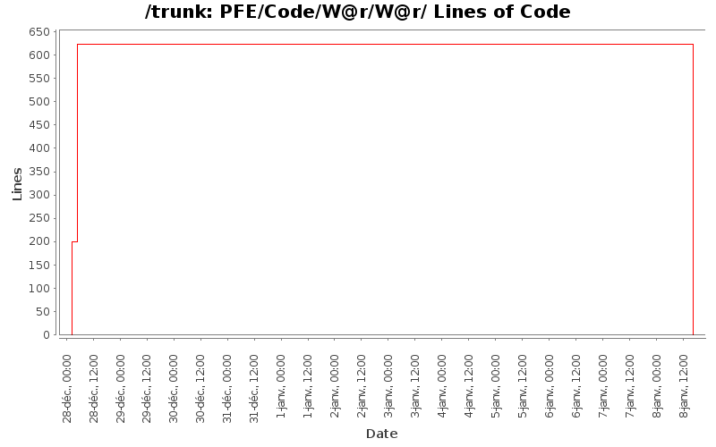

[root]/PFE/Code/W@r/W@r
 Debug
(0 files, 0 lines)
Debug
(0 files, 0 lines)

| Author | Changes | Lines of Code | Lines per Change |
|---|---|---|---|
| Totals | 54 (100.0%) | 822 (100.0%) | 15.2 |
| jpierre03@gmail.com | 36 (66.7%) | 623 (75.8%) | 17.3 |
| mesbahi.jaafar | 18 (33.3%) | 199 (24.2%) | 11.0 |
- Destruction du projet Visual Studio en C++
(vu qu'il existe aussi sous netbeans)
(cela m'a été demmandé, car les caractères spéciaux font que c'est la galère à modifier)
Solution: à partir de la racine du dépot, svn rm --force Code/W@r
car lorsque l'on est dans le même répertoire svn considère cela comme un dossier (W) à la révision r.
Et donc ça marche pô
0 lines of code changed in 20 files:
[découverte du C++ --> j'ai jeté un oeil pour voir à quoi ça ressemble]
- suppression des librairies non c++ pur
(conio.h, dos.h, que j'ai pas sur ma machine, et qui servaient pas)
--> compile et s'xecute bien avec gcc (gratuit et fournis avec GNU/Linux :)
--> après une légère manip, le code s'intègre bien à netbeans
manip : créer un nouveau projet c++
lorsque c'est fait : ajouter aux sources "Existing Items from folder"
et le tour est joué.
+ ajout d'une license de code (GLP3).
Car en l'absence de code : c'est le bo**el pour savoir qui est possesseur du code
surtout sur un dépôt public (comme l'est google code)
-+ transformation en anglais
* Tracalibite --> Tracability
* Machine --> WorkStation
PS : Oh, une contribution externe sur un projet open-source naissant !
623 lines of code changed in 16 files:
+ Ajout Projet W@R crée sous Visual Studio 2005 express c'est une version gratuite que vous pouvez la télécharger et l'installer facilement.
199 lines of code changed in 18 files: